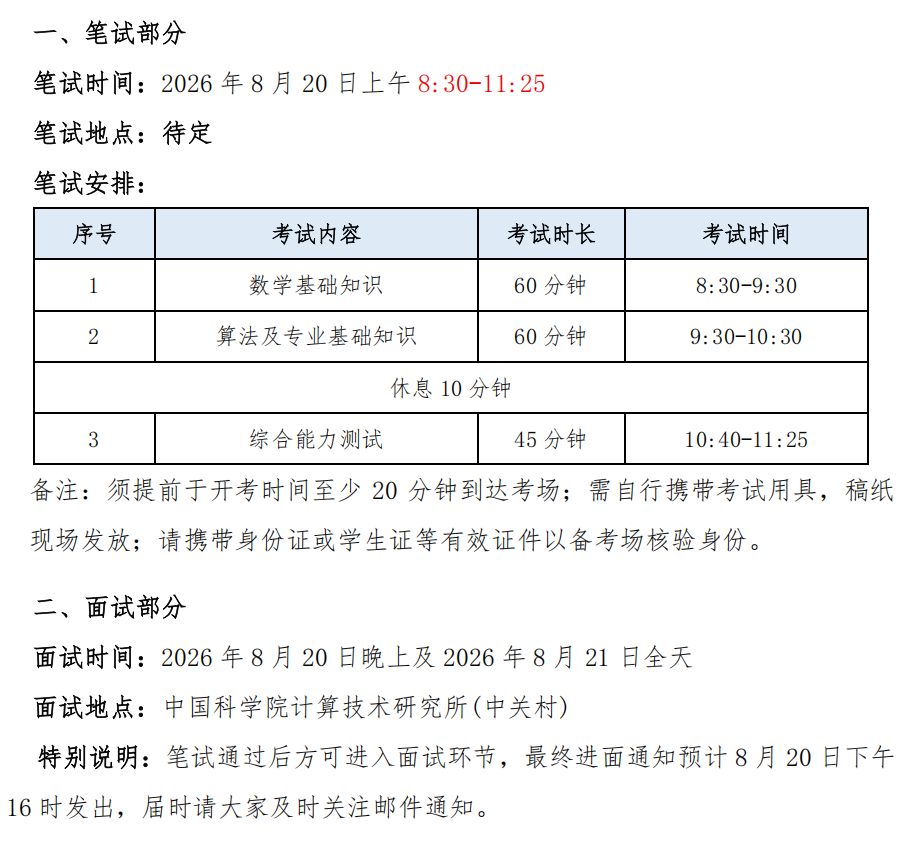

FIELD NOTE / 2026
中国科学院计算技术研究所 VIPL 组
夏令营后续考核
先进行覆盖数学、算法和 AI 的笔试，通过后再参加科研与专业面试。
先笔试后面试数学 / 算法 / AI / Agent单人面试约 20 分钟
01 / 进入方式与整体情况
- 正常夏令营本身会持续好几天，但我前面的夏令营活动没有入营，后来直接收到后续考核通知，因此没有参加前几天的常规活动，而是直接进入笔试和面试环节，可以理解为“霸面”进入考核。
- 当时听到的说法是，这种直接进入后续考核的情况可能与导师推荐有关。不过我提前联系过老师，对方并没有回复我，我最后仍然收到了考核通知，所以具体筛选机制我也不清楚。可能老师看到了邮件但没有回复，也可能还有其他筛选方式。
- 这套考核整体比较硬核，先笔试、再面试，而且只有通过笔试才能进入面试。笔试确实会刷人，我认识的同学中就有人笔试后没有进入面试。
02 / 官方考核安排

03 / 笔试内容与难度
（1）数学基础知识
主要包括高等数学、线性代数和概率论。高数整体比期末考试难一些，但不会高很多，我当时基本都做出来了，不过这也可能和我之前学过数学竞赛有关。线性代数中有几道题明显超出一般期末考试的范围，难度比较高；概率论我当时已经很久没有系统复习，因此对难度判断不太好把握，体感大致和期末考试相当或略难。
（2）算法及专业基础知识
覆盖面比较广。数据结构会涉及栈、队列等基础内容，算法会考排序、动态规划等；人工智能部分会涉及 Transformer 的计算和参数量计算、卷积相关计算，以及一些 AI 基础与前沿知识。
我还遇到过 API 调用费用计算，例如给定输入、输出价格，以及缓存命中和未命中时的不同计费方式，让你计算最终费用。最后还有 Agent 相关题目：先考 Agent、MCP 等概念，再给一张流程图，让你判断其中的 Agent 设计或执行流程是否存在问题、指出错误，并进一步说明如何优化整个流程。
（3）综合能力测试
这一部分比较杂，偏综合能力和临场分析。会出现类似行测或智力测试的题目，例如脑筋急转弯、图形推理，也会有语文、句子排序、政治、英语翻译或选择题等。最后还有一道题要求判断一个实验或论文描述中存在哪些问题并说明原因。这部分很难专门准备，大家的差距通常不会像专业题那么明显。
04 / 面试形式与内容
- 单人大约 20 分钟。前面约 6 分钟进行 PPT 展示，其中 1 分钟使用英文、5 分钟使用中文，之后进入老师问答。
- 项目问答会围绕 PPT 中的科研经历继续追问，例如具体做了什么、为什么这样设计、自己负责哪一部分、方法细节和实验结果等。
- 专业问答比较开放，既可能问人工智能方向的综合理解，也可能问数学、概率统计和最优化。整体问题范围很广，难度也比较高，很多内容更依赖平时持续积累，而不是面试前短期突击。
05 / 线下面试问题整理
下面只整理我之前记录的 VIPL 组夏令营线下面试问题，不包含导师私面问题。
- 概率统计与最优化：假设检验的基本思想；大数定律和中心极限定理分别是什么、二者有什么区别；一阶优化和二阶优化分别是什么、牛顿法属于哪一类；凸函数的定义及几何意义。
- 人工智能与前沿：如果类别数量极大、分类器参数和全量 Softmax 无法放入单张 GPU，如何优化训练与推理；大模型幻觉为什么产生、如何缓解；当前深度学习模型有哪些优势和局限；未来发展趋势如何；为什么近年来模型不断扩大参数规模。
- 科研项目：第一篇论文中“细粒度”具体指什么、如何实现；第二篇论文中的混合粒度注意力如何构造不同粒度特征、完成交互与融合。
- 英文部分：PPT 自我介绍开头约 1 分钟使用英语，核心就是用英文完成简短的自我介绍。
06 / Bar、导师联系与后续衔接
- VIPL 组具体的筛选 bar 我不太确定。以我当时看到的情况来看，我们学校进入考核的不止一两个人，也并不都是专业第一、第二。我进入 VIPL 组时，另外还有自动化和软件工程专业的同学，排名都比较靠前，但并不是只有最顶尖的少数名次才有机会。
- 听到的说法是，提前联系导师后，导师可能会把合适的学生推荐进入后续考核，因此计算所比较值得提前联系老师。不过计算所除了 VIPL 之外还有很多组，不同组的考核形式、筛选标准和 bar 都可能不同，可以结合方向多尝试几个组。
- 报名时会填写意向导师，面试后的接收很大程度上取决于意向导师是否愿意接收以及导师的名额情况。夏令营结束后通常也没有统一的正式结果通知，更多是导师通过电话或微信联系。
- 我当时联系的老师名额比较紧张，面试后老师打电话告诉我暂时没有名额，并推荐了另一学院的老师；因为对方不在计算所，我没有继续。后来老师提到可能会有工程硕博名额，并建议我继续关注。后续我再询问时名额还没有确定，老师建议我报名预推免；由于夏令营笔试已经通过，报名预推免后可以不再参加笔试，直接进入面试。最后因为与复旦的预推免时间冲突，我没有参加后续考核。